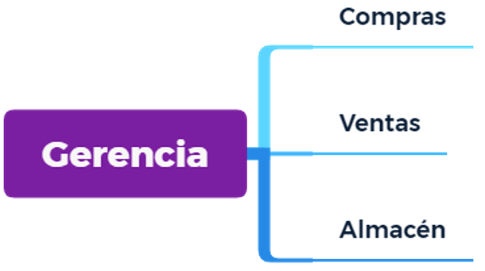
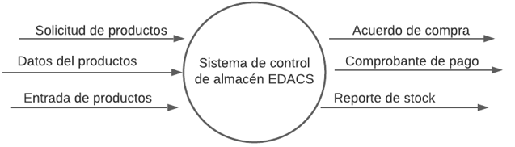
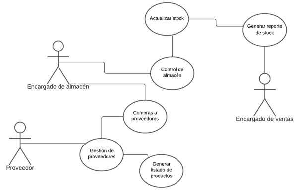
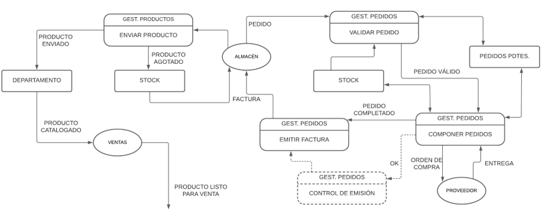

Además de ofrecer el valor de los recursos de una empresa,
esta información es de suma importancia para tomar
decisiones o crear estrategias. Por otro lado, mientras más
bienes, productos o recursos se posean, es más difícil llevar un
control de ellos, por lo que su gestión se complica.
ANÁLISIS Y DISEÑO DE SISTEMAS
EDACS-2022
Equipo de Desarrollo, Administración y Creación Sustentable
Mathus Evangelista Eliud Vladimir
Perez Torres Ivan Gabriel
Zamora Hernández Marco Antonio
Fase 1. Análisis.
Subfase 1.1. Conocer el ayer, presente/prácticas ágiles.
Se hace un análisis documental llevado a cabo en base a la investigación
sobre una
empresa y más específicamente, un área dentro de esa empresa.
Actividad 1.1.1. Identificar y obtener la misión, visión, planes,
objetivos, funciones y
actividades de la empresa.
Misión: Ofrecer al público ropa de la
más alta calidad al mejor precio del
mercado para que así pueda
desarrollar sus actividades
cotidianas luciendo su belleza y
resaltando su elegancia.
Visión: Posicionarnos en el mercado
como una empresa exitosa y
socialmente responsable con gran
reconocimiento a nivel regional
gracias a la calidad y precio de
nuestros productos.
Objetivos: Impulsar el crecimiento de
nuestra empresa de la mano con el
cuidado al medio ambiente y el
respeto hacia nuestros empleados,
socios y clientes.
Fase 1. Análisis.
Subfase 1.1. Conocer el ayer, presente/prácticas ágiles.
Se hace un análisis documental llevado a cabo en base a la investigación
sobre una
empresa y más específicamente, un área dentro de esa empresa.
Actividad 1.1.2. Identificar la estructura organizacional de la empresa.
ORGANIGRAMA

UBICACIÓN
Ubicación de la tienda: Boulevard Miguel de Cervantes Saavedra, Granada,
Ciudad de México, CDMX.
Fase 1. Análisis.
Subfase 1.1. Conocer el ayer, presente/prácticas ágiles.
Se hace un análisis documental llevado a cabo en base a la investigación
sobre una
empresa y más específicamente, un área dentro de esa empresa.
Actividad 1.1.3. Identificar el área particular donde se aplicará el
sistema de información
FUNCIONES Y ACTIVIDADES
ÁREA
FUNCIONES
ACTIVIDADES
ALMACÉN
Llevar registro de lo que se compra y
vende
Recibir productos comprados
Dar los productos a vender
Informar al gerente para abastecer el
inventario
Llevar registro de los productos que se compran
a los proveedores autorizados y aquellos
productos que se venden al público
Recibe los productos comprados a los
proveedores para posteriormente llevarlos a
ventas para su respectiva venta
En caso de que un producto esté agotado, se
encargará de informar al gerente para llevar a
cabo planes de reabastecimiento
Fase 1. Análisis.
Subfase 1.1. Conocer el ayer, presente/prácticas ágiles.
Se hace un análisis documental llevado a cabo en base a la investigación
sobre una
empresa y más específicamente, un área dentro de esa empresa.
Actividad 1.1.4. Identificar el área particular donde se aplicará el
sistema de información
ALMACEN
El área particular donde se aplicará el sistema de información es el
área encargada del almacén, en la cual algunas de sus funciones radican
en:
Llevar registro de los productos que se compran a los proveedores
autorizados y aquellos productos que se venden al público.
Recibe los productos comprados a los proveedores para posteriormente
llevarlos a ventas para su respectiva venta.
En caso de que un producto esté agotado, se encargará de informar al
gerente para llevar a cabo planes de reabastecimiento.
Fase 1. Análisis.
Subfase 1.1. Conocer el ayer, presente/prácticas ágiles.
Se hace un análisis documental llevado a cabo en base a la investigación
sobre una
empresa y más específicamente, un área dentro de esa empresa.
Actividad 1.1.5.1 Preparar la entrevista a realizar hacia el encargado
del área de enfoque elegido
ENTREVISTA AL ENCARGADO DE ALMACÉN DE
LA TIENDA DE ROPA
FUNCIONES DE LA PERSONA A ENTREVISTAR:
Llevar registro de los productos que se compran a los proveedores
autorizados y aquellos productos que se venden al público
Recibe los productos comprados a los proveedores para posteriormente
llevarlos a ventas para su respectiva venta
En caso de que un producto esté agotado, se encargará de informar al
gerente para llevar a cabo planes de reabastecimiento
TIPO DE ENTREVISTA
8 preguntas mixtas en forma de embudo (de preguntas generales a
preguntas específicas).
Redactar al menos 8 preguntas
¿Cuál es la actividad que más tiempo te lleva realizar?
Catalogar los productos de acuerdo a su departamento.
En tu opinión, ¿Qué sistema dentro de la gestión de inventario
necesita cambios para mejorar la productividad?
La forma en que se lleva registro de los productos comprados y los
puestos a la venta se lleva a cabo en una hoja física de registro,
sería mejor en un Excel.
¿Consideras importante tu participación en la tienda?
Si, pues mi labor es decirle a la tienda qué le falta de productos y
qué no.
¿Cómo se organizan los productos en el almacén?
Si el producto urge se pone inmediatamente en venta, si llega en
grandes volúmenes sólo una pequeña cantidad se muestra a la venta y
la demás se guarda en el almacén.
¿Por qué organizan los productos de esa forma?, ¿Por qué no
organizan los productos que son comprados?
Porque la organización depende de la relevancia o urgencia del
producto que se acaba de comprar al proveedor.
¿Qué haces cuando un producto está a punto de agotarse?
Me comunico con el gerente para llevar a cabo los planes de contacto
y compra a los proveedores.
¿Cuántas personas están a tu cargo?
2 personas
¿Con qué frecuencia se efectúa el reabastecimiento de la tienda?
Por lo general es una vez cada dos semanas, aunque si el producto se
agota antes de ese plazo, el reabastecimiento se realiza el viernes
de esa misma semana en que se acabó el producto.
¿Dónde registras las entradas y salidas?
Un documento en formato de tabla.
¿Utilizan un sistema de información?
No que yo sepa.
CUESTIONARIO CON ESCALA NOMINAL
¿Cómo calificarías tu desempeño laborando en esta tienda?
a. Muy malo
b. Malo
c. Regular
d. Bueno
e. Muy bueno
¿Qué tan eficiente consideras la organización de inventario que se
lleva
a cabo dentro de la tienda?
a. Nada eficiente
b. Lo suficientemente eficiente
c. Muy eficiente
¿Cómo calificarías los planes de reabastecimiento de la tienda que el
gerente sugiere seguir?
a. Muy malos
b. Malos
c. Regulares
d. Buenos
e. Muy buenos
¿Qué tan bueno consideras el sistema que lleva registro de los
productos comprados y los vendidos?
a. Muy malo
b. Malo
c. Regular
d. Bueno
e. Muy bueno
En una escala del 1 al 5 donde 1 es muy agotador y 5 es muy liviano,
¿Cómo consideras el proceso de recibir los productos comprados y
llevarlos al almacén para su respectiva venta?
a. 1
b. 2
c. 3
d. 4
e. 5
Fase 1. Análisis.
Subfase 1.1. Conocer el ayer, presente/prácticas ágiles.
Se hace un análisis documental llevado a cabo en base a la investigación
sobre una
empresa y más específicamente, un área dentro de esa empresa.
Actividad 1.1.6. Elaborar el diagrama de flujo de datos de los procesos
elaborados/involucrados. Se realiza un diagrama de contexto para
identificar los procesos
que entran y los datos obtenidos del sistema, un diagrama de casos de
uso y el diagrama
de flujo de datos que describe los procesos y actividades a llevar a
cabo en el sistema.
Diagrama de contexto:

Diagrama de casos de uso:

Actores
Proveedor, encargado de almacén
Descripción
El encargado de almacén revisa el reporte de
stock y, si es necesario, solicita los productos
al proveedor
Datos
Datos del producto (nombre, cantidad,
tamaño, color, código de barras), ticket
Estímulo
Agotamiento de stock
Respuesta
Solicitud de pedido de productos nuevos
Comentarios
El encargado del almacén debe actualizar el
registro del stock y en base a éste contactar
a los correspondientes proveedores
Actores
Encargado de almacén, encargado de
ventas
Descripción
El encargado de almacén revisa el reporte de
stock y, si hay suficiente cantidad de
productos, los provee al encargado de ventas
Datos
Datos del producto (nombre, cantidad,
tamaño, color, código de barras), ticket
Estímulo
Existencia de stock
Respuesta
Envío de productos para venta
Comentarios
El encargado del almacén debe actualizar el
registro del stock y en base a éste proveer de
productos al encargado de ventas
Diagrama de flujo de datos:

DESCRIPCIÓN DEL FLUJO DE DATOS
•PROVEEDOR:
ID: RFC
Nombre: Proveedor
Descripción: Da información acerca del proveedor al cuál se le
comprará la mercancía, tal como nombre, RFC, teléfono, correo electrónico y dirección.
Origen: Proveedor
Destino: Almacén
Tipo de flujo de datos:
Archivo
Pantalla
Informe
Formulario
Interno
La estructura de datos que viaja con el flujo:
Información del proveedor
Volumen/Tiempo
1/mes
Comentarios:
Los proveedores dados de alta serán aquellos a los cuales se estará
permitido comprar mercancía en caso de que esta se agote o exista fallas en algún
producto, el encargado de almacén puede consultar estos datos para contactar una nueva compra
o realizar cualquier tipo de reclamo o aclaración
•PRENDA:
ID: ID de prenda
Nombre: Prenda
Descripción: Da información acerca de la prenda de vestir que se encuentra en el almacén, tal
como color, tipo de tela, tamaño, cantidad y tipo de prenda.
Origen: Proveedor
Destino: Almacén
Tipo de flujo de datos:
Archivo
Pantalla
Informe
Formulario
Interno
La estructura de datos que viaja con el flujo:
Información de la prenda
Volumen/Tiempo
10/hora
Comentarios:
Los datos acerca de la prenda se ponen a disposición del área de ventas para corroborar que
el producto que se ha comprado encaja con el producto que hacía falta en la tienda o que un
cliente demandaba, y ya que el producto se cataloga de acuerdo a su departamento, se agiliza
el proceso de venta.
•DEPARTAMENTO:
ID: Nombre de departamento
Nombre: Departamento
Descripción: Da información acerca del departamento al cual pertenece una prenda de vestir,
tal como su nombre.
Origen: Almacén
Destino: Ventas
Tipo de flujo de datos:
Archivo
Pantalla
Informe
Formulario
Interno
La estructura de datos que viaja con el flujo:
Información del departamento
Volumen/Tiempo
1/mes
Comentarios:
En cada departamento se encuentran las prendas que se han comprado a los proveedores. Es
responsabilidad del encargado del almacén saber catalogar las prendas de acuerdo al
departamento para que el proceso de venta de productos sea eficiente, y de la misma manera,
cuando un producto se esté agotando, el encargado del almacén se dará cuenta a qué
proveedor contactar de acuerdo al departamento del producto en cuestión.
•EMPLEADO:
ID: CURP
Nombre: Empleado
Descripción: Da información acerca de los empleados que se encuentran en el área de
almacén, tal como su nombre completo, CURP, teléfono y rol.
Origen: Almacén
Destino: Administración
Tipo de flujo de datos:
Archivo
Pantalla
Informe
Formulario
Interno
La estructura de datos que viaja con el flujo:
Información del empleado
Volumen/Tiempo
5/semana
Comentarios:
Los empleados son la columna vertebral del sistema, de ellos depende que el sistema
implementado funcione o no, si es eficiente o no, si representa una ayuda o un desperdicio de
recursos, sin embargo, puede haber fallas en el personal, por lo que llevando un registro de los
empleados el margen de error se reduce y el contacto con el empleado se agiliza
Diccionario de datos:
•PROVEEDOR:
Proveedor =
Nombre del proveedor +
RFC +
Teléfono +
Correo electrónico +
Dirección + Foto.
Nombre del proveedor =
Nombre +
Razón social
RFC =
Nombre +
Fecha de registro
Teléfono =
Código de área +
Número local
Correo electrónico =
Nombre de usuario +
Tipo de correo electrónico
Dirección =
Calle +
(Departamento) +
Ciudad +
Estado +
Código postal +
(País)
• PRENDA:
Prenda =
Tipo de prenda +
Color +
Talla +
Material + Departamento +
Foto
Tipo de prenda =
(Estilo) +
(Forma de elaboración)
Color =
Tono +
Saturación
Talla =
(Inicial de la talla) +
(Medidas) +
Material =
Tipo de tela
• STOCK:
Stock =
ID producto +
Prenda
ID producto =
Auto incrementable
Prenda =
Tipo de prenda +
Color + Talla +
Material +
Departamento
Foto.
• EMPLEADO:
Empleado =
Nombre del empleado +
Teléfono +
Dirección +
CURP +
Rol +
Foto
Nombre del empleado =
Nombre +
(Segundo nombre) +
Apellidos
Teléfono =
Código de área +
Número local
Dirección =
Calle +
(Departamento) +
Ciudad +
Estado +
Código postal +
(País)
CURP =
Primera letra del primer
apellido +
Primera vocal del primer
apellido +
Primera letra del segundo
apellido +
Primera vocal del primer
nombre +
Año de nacimiento +
Mes de nacimiento +
Día de nacimiento +
Sexo +
Entidad federativa de
nacimiento +
Clave